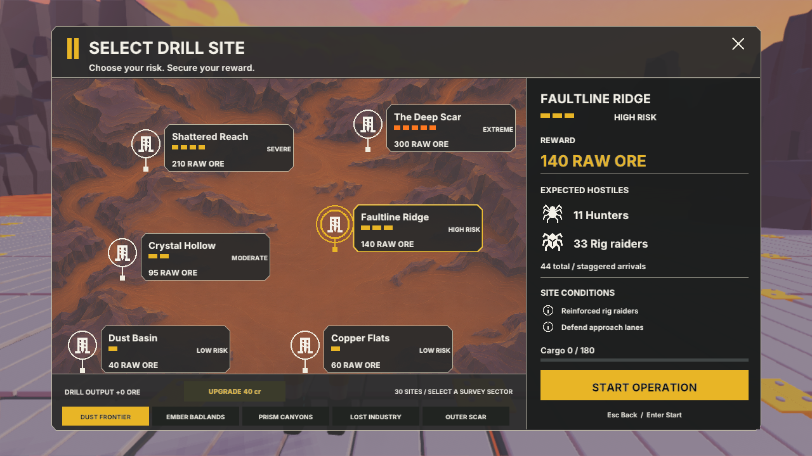

Five survey sectors contain six repeatable missions each. All sites are selectable immediately. Click a site to preview its actual ore reward and spider composition, then Start Operation. Arrow keys cycle sites; Page Up / Down changes sector. Cargo capacity remains enforced.
These are baseline values before operation growth, drill upgrades and permanent extraction bonuses. Total enemies rise with operations and are capped at 300 in the active game. The simultaneous active cap is 24; the existing director releases staggered reinforcements. No FPS improvement or fully playtested balance is claimed.
| # | Mission | Risk | Spiders | Raw ore | Pressure |
|---|---|---|---|---|---|
| 01 | Dust Basin | LOW RISK | 18 | 40 | Reinforced rig raiders |
| 02 | Copper Flats | LOW RISK | 24 | 60 | Fast hunters |
| 03 | Crystal Hollow | MODERATE | 32 | 95 | Fragile spider swarm |
| 04 | Faultline Ridge | HIGH RISK | 44 | 140 | Reinforced rig raiders |
| 05 | Shattered Reach | SEVERE | 58 | 210 | Fast hunters |
| 06 | The Deep Scar | EXTREME | 76 | 300 | Fragile spider swarm |
| 07 | Ironwash | LOW RISK | 26 | 65 | Fast hunters |
| 08 | Split Mesa | LOW RISK | 34 | 95 | Fragile spider swarm |
| 09 | Redglass Basin | MODERATE | 44 | 140 | Reinforced rig raiders |
| 10 | Ember Gulch | HIGH RISK | 58 | 210 | Fast hunters |
| 11 | Furnace Shelf | SEVERE | 76 | 300 | Fragile spider swarm |
| 12 | Cinder Rift | EXTREME | 96 | 420 | Reinforced rig raiders |
| 13 | Violet Wash | LOW RISK | 36 | 100 | Fragile spider swarm |
| 14 | Shard Flats | LOW RISK | 46 | 145 | Reinforced rig raiders |
| 15 | Prism Hollow | MODERATE | 60 | 210 | Fast hunters |
| 16 | Amethyst Ridge | HIGH RISK | 78 | 300 | Fragile spider swarm |
| 17 | Razor Spires | SEVERE | 100 | 430 | Reinforced rig raiders |
| 18 | Crystal Abyss | EXTREME | 126 | 580 | Fast hunters |
| 19 | Old Claim | LOW RISK | 48 | 145 | Reinforced rig raiders |
| 20 | Broken Rig | LOW RISK | 62 | 210 | Fast hunters |
| 21 | Derelict Reach | MODERATE | 80 | 300 | Fragile spider swarm |
| 22 | Buried Foundry | HIGH RISK | 102 | 430 | Reinforced rig raiders |
| 23 | Iron Grave | SEVERE | 130 | 600 | Fast hunters |
| 24 | Blackout Rift | EXTREME | 160 | 780 | Fragile spider swarm |
| 25 | Outer Reach | LOW RISK | 64 | 210 | Fast hunters |
| 26 | Dead Horizon | LOW RISK | 82 | 300 | Fragile spider swarm |
| 27 | Storm Basin | MODERATE | 104 | 430 | Reinforced rig raiders |
| 28 | Obsidian Fault | HIGH RISK | 132 | 600 | Fast hunters |
| 29 | Titan Scar | SEVERE | 166 | 820 | Fragile spider swarm |
| 30 | Worldbreaker | EXTREME | 200 | 1100 | Reinforced rig raiders |
Active per-project tuning: Mining Operation component → Contracts JSON. The editable canonical default catalog is Plugins/KarlsonDemo/Mining/DrillSites.json; SourceData/DrillSites.json in the game is a reference copy. Runtime preview and launch use the same rules.